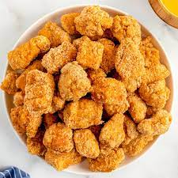

Odin Recipes

Chicken Nuggets
What is there to say?
You love them, I love them, the kids love them. So lets get to it...
Ingredients
For Marinade
- Boneless chicken
- Salt
- Black pepper
- Garlic powder
- Paprika
- Baking powder
- Pickle juice
For Frying
- Flour
- Cornstarch
- Frying oil
Steps
The Prep
- Rinse and dry chicken
- Cut chicken into desired nugget size
-
Place chicken in container with all ingredients for marinade
- Marinade for at least 1 hour
- combine 50/50 cornstarch and flour
- Add dry mixture to marinade/chicken
Lets Get Fried
- Pre-heat frying oil to 350
-
Add marinated chicken in batches to prevent oil from dropping temp to much
-
Cook nugets for 3-5 minutes, agitating ocassionaly to keep them from sticking. Rule of thumb is if they are floating they are most likely done.
-
Place completed nuggets on wire rack to cool, not a paper towel or they will not stay crispy
-
Serve with side(s) of choice and dip of choice